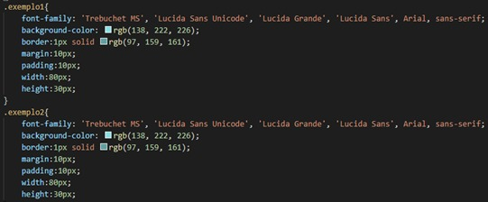
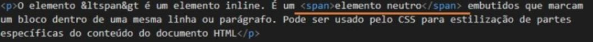
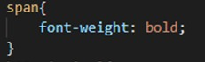
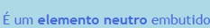
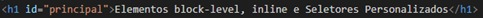
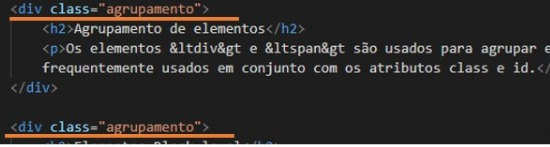
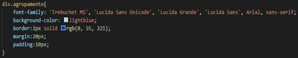

Ferramentas que facilitam a implementação de código se fazem muito úteis, quando tempo é um requisito importente. Assim, quando se quer inserir tags iguais em diferentes partes de um texto solto no documento html, basta:
Precione o ALT e selecione com o mouse os títulos que deseja atribuir com uma mesma tag;
Depois, de o comando CTRL+SHIFT+P e selecione QUEBRAR LINHA COM ABREVIAÇÃO, e insira a tag almejada;
Verifique que agora as partes selecionadas foram contempladas pela tag.
Agrupamento de elementos
Os elementos <div> e <span> são usados para agrupar e estruturar um documento e são frequentemente usados em conjunto com os atributos class e id.
Elementos Block-level
O elemento <div> é um elemento block-level. Tem a função de agrupar elementos html, definindo blocos de contéudo sempre iniciando uma nova linha e ocupando toda a linha.
Exemplo No navegador:
Bloco 1
Bloco 2
No código:

font-family: tipo de fonte; background-color: cor de fundo; border: borda; margin: margem; padding: preenchimento; width: largura; height: altura.
Elementos Inline
O elemento <span> é um elemento inline. É um elemento neutro embutido que marca um bloco dentro de uma mesma linha ou parágrafo. Pode ser usado pelo CSS para estilização de partes específicas do conteúdo do documento HTML.
Exemplo
No código:


No arquivo css, realize esta função para que a frase que está demarcanda com o SPAN fique visível.
No navegador:

Seletores Personalizados
Possibilita personalizar tags do documento HTML para estilização. Temos os seletores do tipo classe e o seletor do tipo id.
Seletor do tipo id
O seletor de id usa o atributo id de um elemento HTML para selecionar um elemento específico. Cada id é única. O seletor de id é representado por “#”.
Exemplo:

"principal" remete-se ao nome da id. Note que o símbolo # foi utilizado para demarcar o id.
Seletor do tipo classe
O seletor de classe seleciona elementos HTML com um atributo de classe específico.O seletor de classe é representado por um ponto, “.”, e tem como alvo elementos com um determinado valor para seu atributo class. Para casos em que haja necessidade de mais de um elemento com a mesma identificação usamos o atributo class. Em outras palavras, se o usuário quiser que algumas DIVs fiquem estilizadas de determinado tipo e outras DIVs de outro tipo, utilizamos o seletor do tipo classe, pois este irá realizar tal ação de modo mais eficaz.
Exemplo:

Estas DIVs foram selecionadas e atribuidas com um nome de classe em comum, "agrupamento".

A estilização foi feita na imagem acima, portanto, todas as DIVs com o mesmo nome de classe ficarão igualmente estilizadas. Obs: Pode-se escrever div.agrupamento ou apenas .agrupamento
Pseudo-Classes
Usada para definir um estado especial de um elemento. O seletor de classe é representado por dois pontos, “:”. Estão relacionados a um elemento ou uma classe.